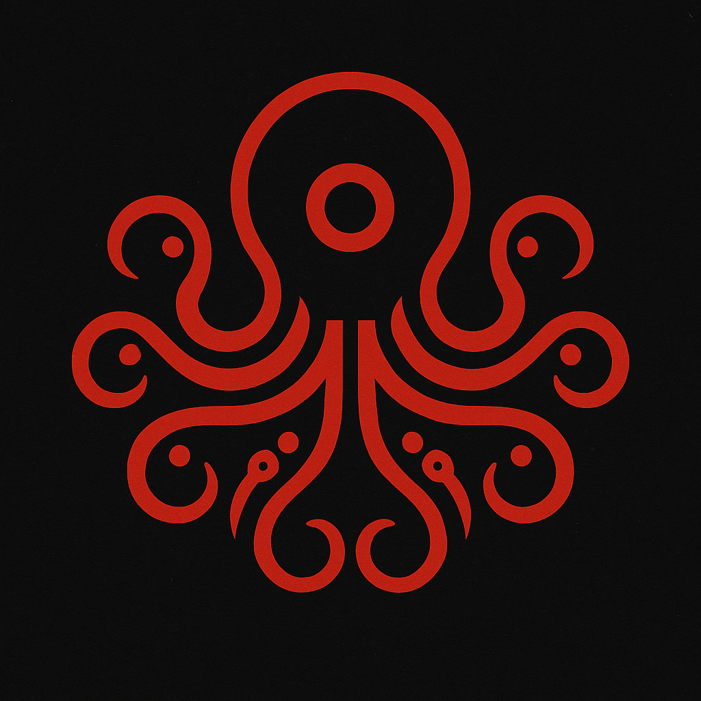

Creative cybersecurity through simulation, storytelling, and ethical rigor.
I value fairness, accountability, and community protection—and I bring that energy into every incident response, system audit, and security strategy I touch. Whether I’m documenting results for future adaptation or calmly navigating high-pressure threats, I operate with clarity, purpose, and outside-the-box thinking. I’m not just ahead of the curve—I bend it. Welcome to the Cyberslimm era.
My mission is to build a legacy through cybersecurity—creating opportunities first for posterity, and second, serving as an example of what’s possible when drive, creativity, and resilience come together. I don’t just study threats—I simulate the impossible.
This sprint was designed to maximize retention and readiness for the Security+ exam. It included:
Outcome: A structured, repeatable framework for future certification sprints.
This permission-based simulation is designed to demonstrate ethical hacking and incident response in a controlled environment. Key phases:
All actions are logged, reviewed, and aligned with Cyberslimm’s ethical standards.
A separate systems project focused on presence logic and emotional computation. Currently in development; not part of cybersecurity portfolio.
I’m a cybersecurity professional with a systems-oriented mindset and a passion for protecting digital environments. My strengths in Linux hardening, Python scripting, and structured problem-solving give me the flexibility to adapt faster than anyone I know. I don’t chase threats—I outmaneuver them.
Welcome to the Cyberslimm era.